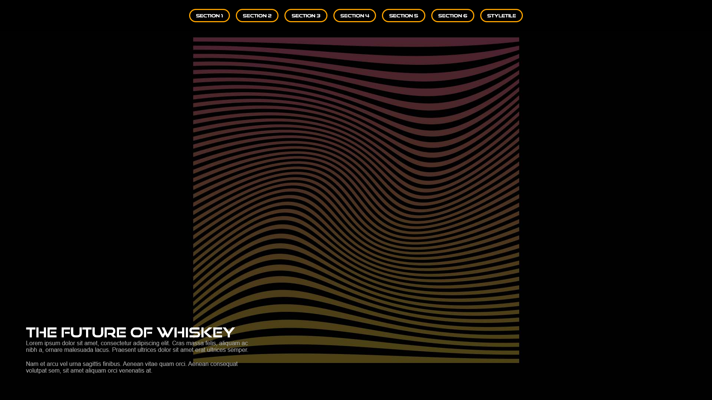
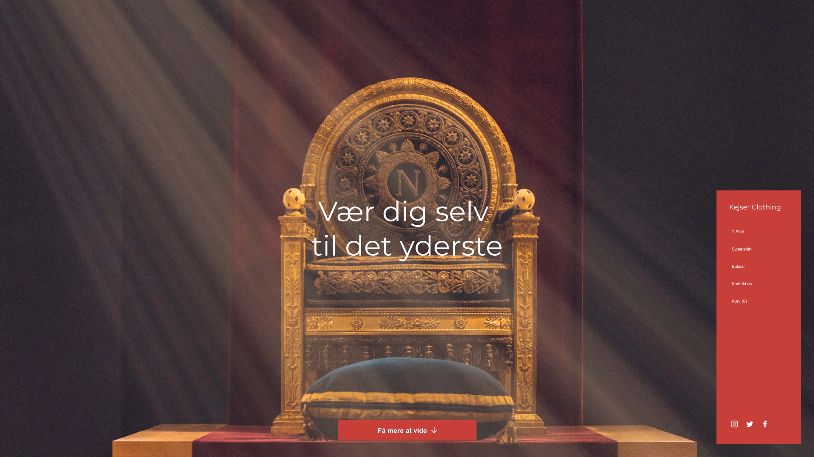
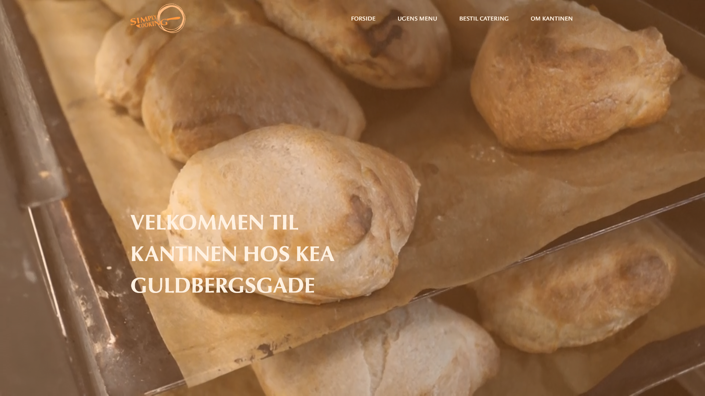
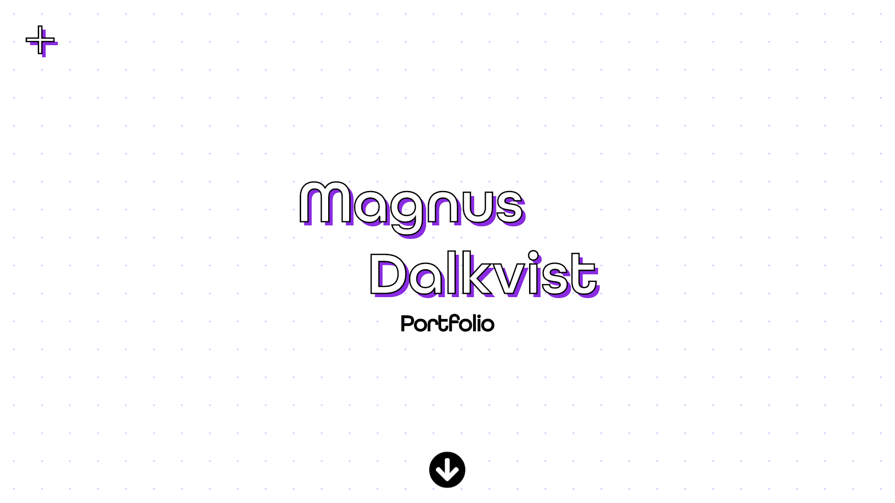

Tema 2 - Grundlæggende HTML
Under dette forløb, fik vi hver især udpeget en stilart at arbejde med, hvor jeg fik art deco. Mit formål med opgaven, var at lave et site der beskriver og giver et indtryk af stilarten. Jeg fokuserede derfor meget på mit valg af farver og fonter, for at understrege stilarten. Eftersom jeg skulle skabe hjemmesidens struktur i html, fulgte jeg et layoutdiagram under kodningsprocessen. Jeg lærte om styling i css, og hvordan jeg skulle tilpasse billeder og tekstbokse. Da sitet skulle være responsivt, blev jeg også introduceret for flexbox og mediaqueries. Jeg lærte om forskellige stilarter, og hvordan disse kan bruges til design af websites mm. Når jeg tænker tilbage på forløbet, ville jeg gerne have været mere bevidst omkring mit farvevalg på siden, og hvordan jeg kunne have gjort siden mere attraktiv og spændende, dog uden at miste sin simplicitet. Noget jeg virkelig har fået gavn af, er den viden jeg nu har fået om layoutdiagrammer, og om hvor lettere det er at kode, når man har planlagt det hele på forhånd.

Gå
til site
Tema 3 - Grundlæggende UX
Under dette forløb, fik vi hver især udpeget en stilart at arbejde med, hvor jeg fik art deco. Mit formål med opgaven, var at lave et site der beskriver og giver et indtryk af stilarten. Jeg fokuserede derfor meget på mit valg af farver og fonter, for at understrege stilarten. Eftersom jeg skulle skabe hjemmesidens struktur i html, fulgte jeg et layoutdiagram under kodningsprocessen. Jeg lærte om styling i css, og hvordan jeg skulle tilpasse billeder og tekstbokse. Da sitet skulle være responsivt, blev jeg også introduceret for flexbox og mediaqueries. Jeg lærte om forskellige stilarter, og hvordan disse kan bruges til design af websites mm. Når jeg tænker tilbage på forløbet, ville jeg gerne have været mere bevidst omkring mit farvevalg på siden, og hvordan jeg kunne have gjort siden mere attraktiv og spændende, dog uden at miste sin simplicitet. Noget jeg virkelig har fået gavn af, er den viden jeg nu har fået om layoutdiagrammer, og om hvor lettere det er at kode, når man har planlagt det hele på forhånd.

Gå
til site
Tema 4 - Animation
Under dette forløb, fik vi hver især udpeget en stilart at arbejde med, hvor jeg fik art deco. Mit formål med opgaven, var at lave et site der beskriver og giver et indtryk af stilarten. Jeg fokuserede derfor meget på mit valg af farver og fonter, for at understrege stilarten. Eftersom jeg skulle skabe hjemmesidens struktur i html, fulgte jeg et layoutdiagram under kodningsprocessen. Jeg lærte om styling i css, og hvordan jeg skulle tilpasse billeder og tekstbokse. Da sitet skulle være responsivt, blev jeg også introduceret for flexbox og mediaqueries. Jeg lærte om forskellige stilarter, og hvordan disse kan bruges til design af websites mm. Når jeg tænker tilbage på forløbet, ville jeg gerne have været mere bevidst omkring mit farvevalg på siden, og hvordan jeg kunne have gjort siden mere attraktiv og spændende, dog uden at miste sin simplicitet. Noget jeg virkelig har fået gavn af, er den viden jeg nu har fået om layoutdiagrammer, og om hvor lettere det er at kode, når man har planlagt det hele på forhånd.

Tema 5 - Grundlæggende indhold

Gå til site
Tema 6 - Portfolio eksamen

Gå til site